CHALLENGE
时间短，输入分散
卖点、价格、赠品、页面、视觉和邮件需要在同一时间整理清楚。
AI-ASSISTED PRODUCT LAUNCH · 2026
我先整理产品卖点和购买信息，再用 AI 快速生成页面与视觉方向。最终的结构、文案、品牌表达、开发沟通和上线质量由我负责。
PROJECT OVERVIEW
[2 WEEKS]
AI-ASSISTED COMMERCE
THE CONSTRAINT
团队资源有限，产品信息也分散在不同文档和沟通中。目标不只是按时上线，而是让用户看懂产品、愿意下单，并为后续销售留下可继续使用的内容。
CHALLENGE
卖点、价格、赠品、页面、视觉和邮件需要在同一时间整理清楚。
MY RESPONSIBILITY
我负责确定页面先讲什么、哪些方案继续做、品牌如何呈现，以及开发上线前的最终检查。
01A · PAGE TASKS
在生成 UI 之前，我先确定页面必须完成的五件事：说明产品、讲清早鸟权益、支持加购、核对订单，并顺利进入结账。
Benefits · Compare · FAQ
$199.99 · 认领进度 · 赠品
商品 · 数量 · 小计
价格 · 权益 · 免费配送
Estimated Total · 主按钮
01B · DELIVERY METHOD
AI 负责快速整理输入、生成可比较的方向；我和团队负责筛选、重组、品牌化、测试和上线。
汇总产品信息、卖点、差异点和购买任务。
把 Wireframe 输入 Figma Make，生成多个 UI 方案。
按信息层级、品牌、购买路径和开发成本比较。
重组页面，并为重点场景补充视觉素材。
检查交互、文案和媒体，修复问题后上线。
02 · UI EXPLORATION
三个方案分别暴露了信息分散、文字看不清和品牌感不足的问题。我保留更清楚的购买结构，再重新整理层级和视觉。
DIVERGE · 左侧发散
CLICK TO SWITCH · 点击切换方向

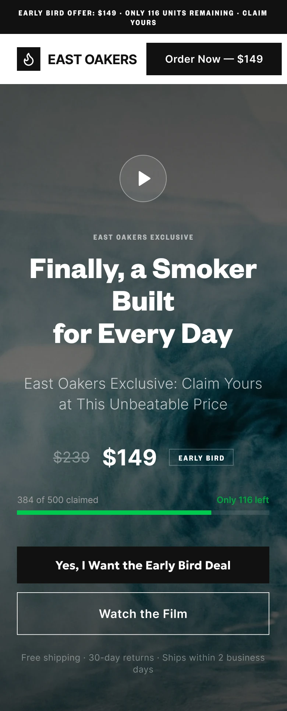

点击上方 Tab 对比方向 · 图片区域可滚动查看完整页面
IMPLEMENT · 右侧落地
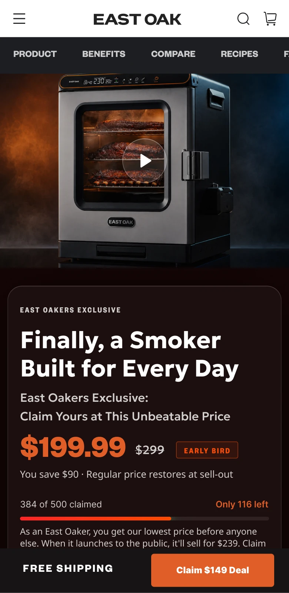
页面向下滚动时，底部购买按钮固定在屏幕内，用户随时可以进入购物车。
沿用方向 03 中媒体、价格、权益和 CTA 同屏出现的方式。
先讲产品价值，再说明价格和权益，减少用户来回寻找信息。
统一字体、颜色、按钮、组件和视觉素材，让页面看起来属于同一个品牌。
FINAL PAGE · PURCHASE FLOW
下面的实际页面展示了用户从了解产品、确认价格，到加入购物车和进入结账的完整过程。
03 · AI VISUAL EXPLORATION
这些图不是最终交付，而是用来比较人物场景、产品主视觉和小空间使用方式，确认后续页面需要什么样的图片。
01 · DIVERGE
先快速尝试不同场景、光线和构图，再排除不符合产品与品牌的方向。
黑白缩略图代表原始探索库；它们只用来说明筛选范围，不作为最终作品展示。
02 · HUMAN SHORTLIST
人物图说明怎么使用，产品图负责吸引注意，小空间场景证明产品适合阳台和露台。

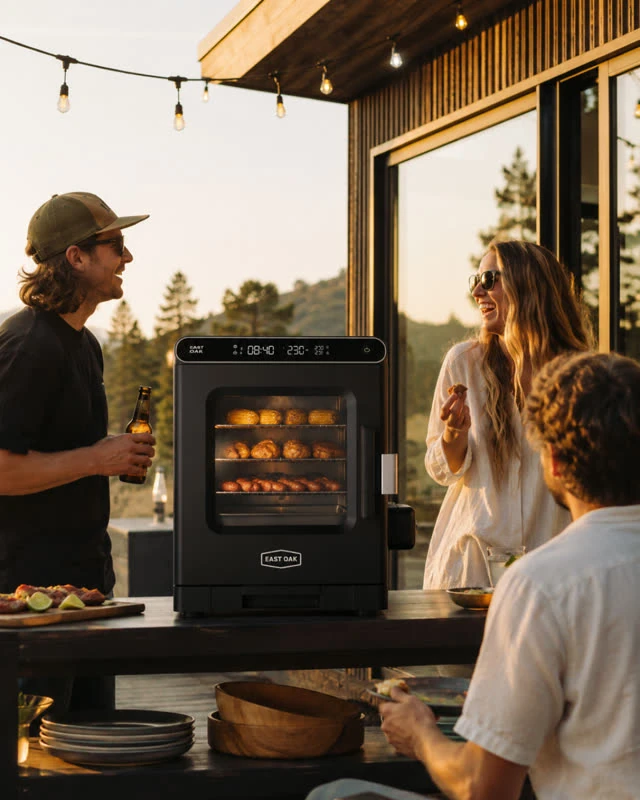


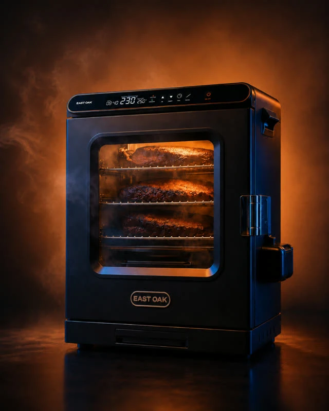

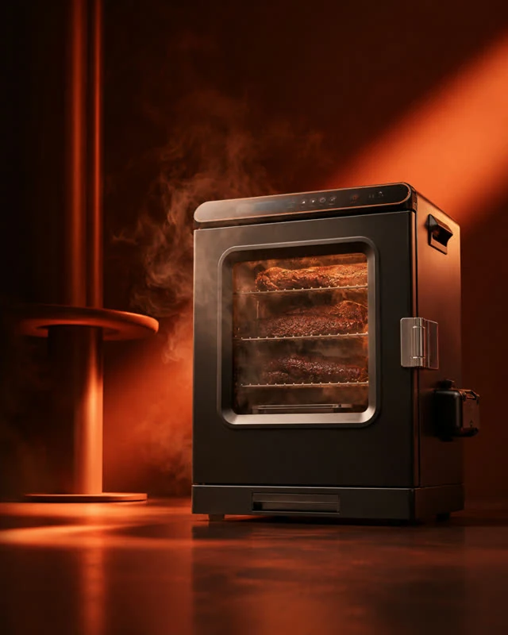
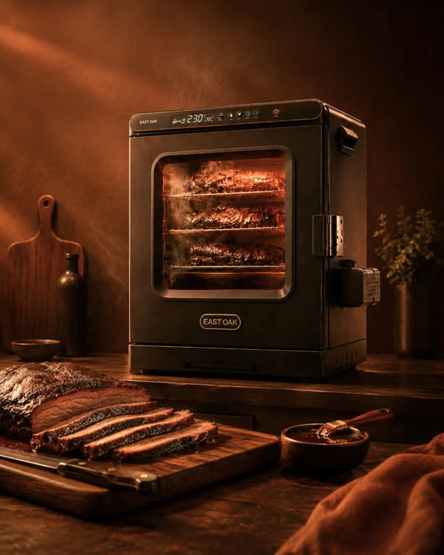

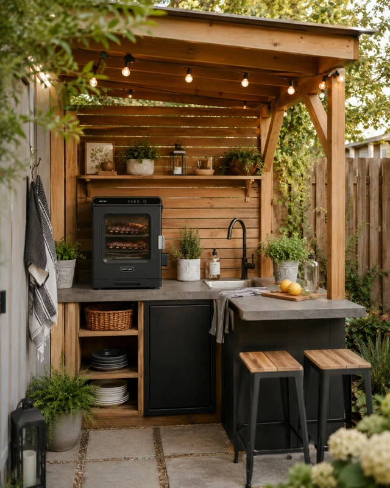

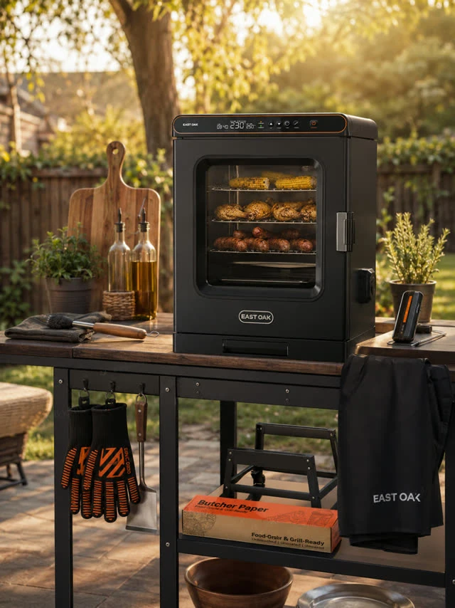
筛选后得到的不是“最后四张图”，而是一套使用规则：人物图说明日常使用，产品图突出火焰与烟雾，小空间图证明桌面尺寸的适用场景。页面、EDM 和上线素材都沿用这套规则。
03 · APPLY TO PAGE
下面展示的是可滚动的真实 HTML，不是页面截图。可以直接查看页面结构、媒体、商品信息和购买入口。
打开完整页面 ↗04 · EDM CAMPAIGN
这些只是 Campaign 中的邮件示例，不代表完整流程。AI 用来帮助生成初稿和视觉素材，我再校正产品信息、文案、版式和 CTA。
Teaser · First Access
预告新品，并开放优先资格。
Everyday Use · Product Value · Public Launch · Recipe
说明产品、使用场景和具体价值。
Objections · Last Day
回答常见疑虑，并提醒优惠截止时间。

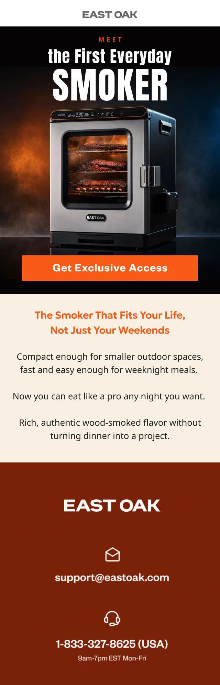

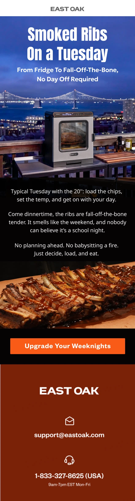
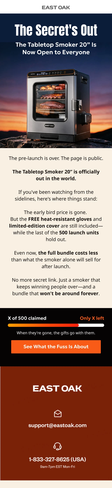
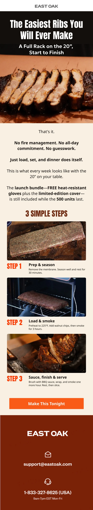
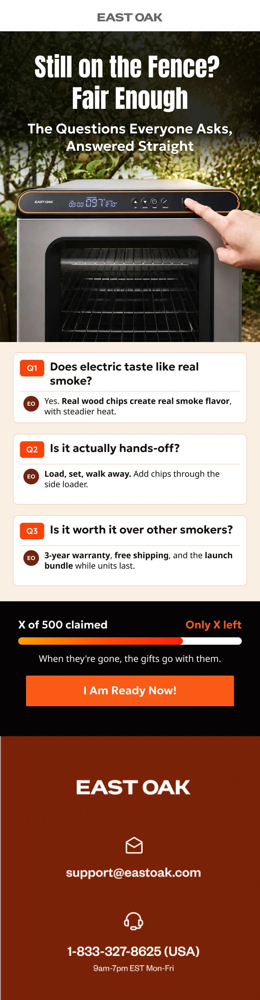

横向滑动查看 8 封 EDM 示例 · 点击可查看高清长图
CAMPAIGN RESULT
Klaviyo 后台记录的 Campaign conversion value 为 $61,627.74。增长看板中，平台归因收入为 $65.5K，占同周期总收入的 33.77%。

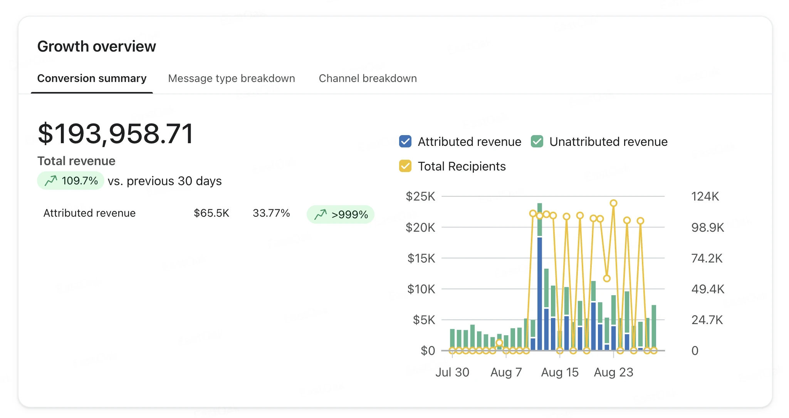
数据口径来自 Klaviyo 原始看板。Campaign conversion value 与 attributed revenue 属于不同报表字段，因此保留平台原始数值，不合并计算；Total recipients 为平台显示的累计收件人次数，并非独立订阅人数。
FINAL RESULT
目标为 300 台，实际售出 323 台，完成率 108%，GMV 为 $64,621.19。销售结果由产品、价格、流量和促销共同推动；我负责页面体验、视觉内容、EDM 和上线质量。
数据范围：8/12–8/23。访客、访问、加购和结账数据来自 Shopify Analytics；增长比例与后台显示的上一对比周期相比。